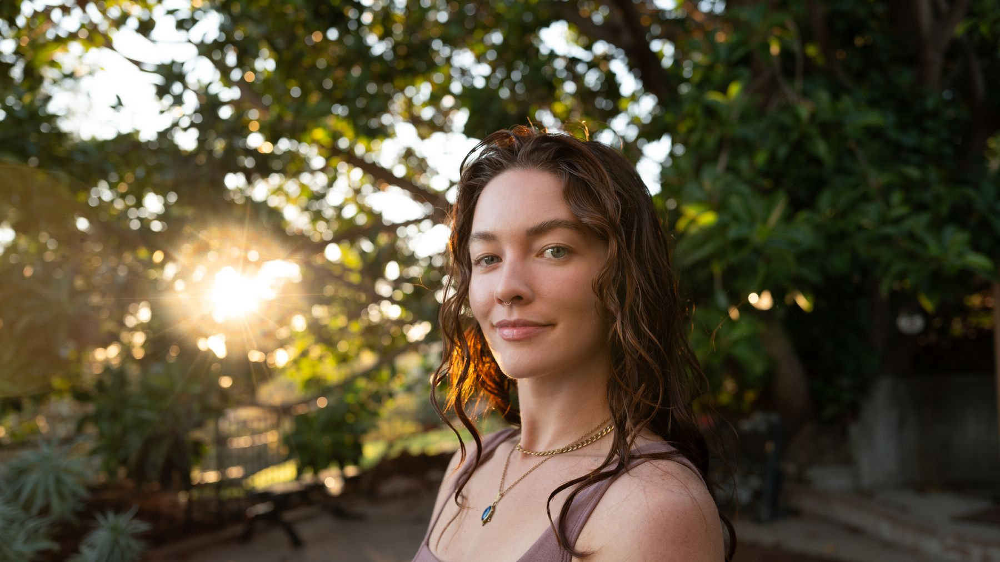
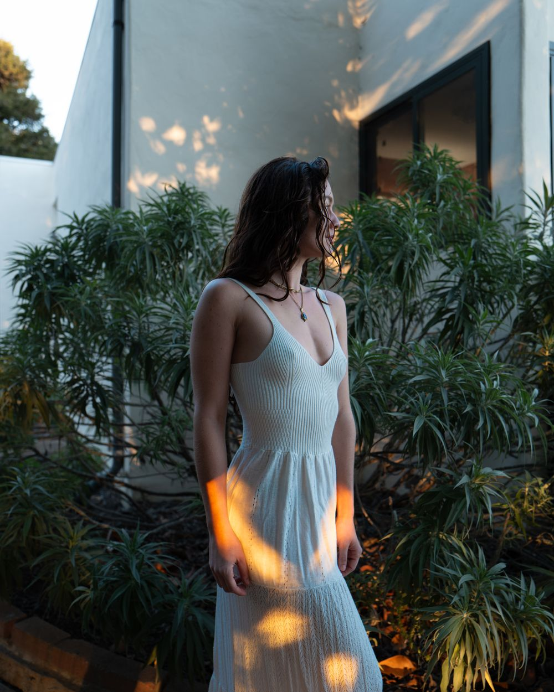
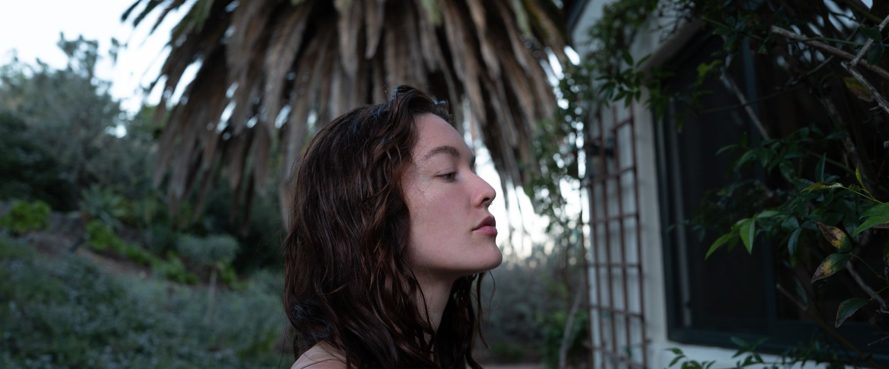

Three ways to open the homepage with a photo. The collar video moves further down the page in every version.
A. Full-bleed cover photo
Your photo fills the whole first screen, with the headline over a soft dark fade on the left. The most immersive and luxe option.

Feel more.
Perform less.
1:1 coaching for a closer, more honest relationship with pleasure.
Book a Discovery CallB. Split screen
Headline on clean linen on the left, a tall photo running edge to edge on the right. Calm, readable, and the closest to today's layout.
Feel more.
Perform less.
1:1 coaching for a closer, more honest relationship with pleasure.
Book a Discovery Call
C. Editorial headline over a wide image
A big centered headline first, then a wide cinematic photo below it. Feels like a magazine cover; the photo you see here is the eyes-closed profile shot.
Feel more. Perform less.
1:1 coaching for a closer, more honest relationship with pleasure.
Book a Discovery Call
Photos here are examples. Any of the shoot photos can go in any layout.